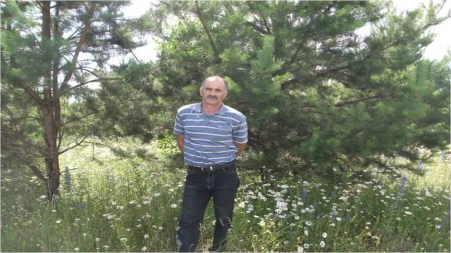

Наставничество
- обязательная форма специальной работы педагога, устремленная на передачу имеющегося у учителя багажа знаний и опыта, выработку необходимых профессиональных и личных качеств воспитуемого при их взаимодействии. Наставляемый – тот участник программы, который во взаимодействии с учителем решает собственные разного плана задачи, получает новый опыт и приобретает необходимые ему компетенции, знания и навыки.
- В последние годы в нашей стране много сделано для изменения системы подготовки кадров, в частности для реализации практико-ориентированного подхода и повышения роли профессионального образования, обеспечивающих подготовку высококвалифицированных кадров в соответствии с современными стандартами. Одним из направлений этой деятельности является проведение конкурсов профессионального мастерства. Все большую популярность в системе среднего профессионального образования приобретают чемпионаты «Профессионалы» и «Абилимпикс». Второй год наш колледж принимает участие в чемпионатном движении по компетенциям «Веб-технологии» и «Веб-дизайн». Компетенции современные, динамичные, постоянно развивающиеся, поэтому интересны студентам. В подготовке участников огромную роль играет наставник. Ведь именно он становится для ребят «путеводителем», помощником в организации подготовки к чемпионату и создателем благоприятного климата. По названным компетенциям таковым является преподаватель колледжа Ласкин Виталий Олегович. Воспитанием профессионалов, не обучением, не тренировкой – а именно воспитанием, Виталий Олегович занимается с 2019 года. До 2021 года победу на региональных этапах его воспитанники одерживали по компетенции «Физическая культура, спорт и фитнес». В 2022 году Виталий Олегович занялся подготовкой участников по компетенциям «Веб-технологии» и «Веб-дизайн». И снова победа: студент Тарасов Д. занимает первое место по компетенции «Веб-дизайн» в рамках регионального чемпионата по профессиональному мастерству «Абилимпикс». Определив точку профессионального роста, преподаватель-наставник разработал индивидуальную программу подготовки участников. Ежедневная, многочасовая подготовка в течение года принесла свои результаты: Сидельник А. – призер регионального чемпионата по профессиональному мастерству «Профессионалы — 2023», Тарасов Д. — победитель регионального чемпионата по профессиональному мастерству «Абилимпикс — 2023».
- С чего начинается колледж? Конечно, с уроков, с кропотливой работы преподавателя и студента. Уроки бывают интересные, яркие, удачные, и – скучные, серые, расплывчатые. Как сделать, чтобы первых уроков было как можно больше, а вторых не было вовсе, как повысить качество обучения – эти вопросы волнуют, прежде всего, заместителя директора колледжа по учебной работе (обычно эту должность называют коротко — завуч). Завуч – это наставник, профессионал, чья поддержка значима в работе каждого педагога. Это первопроходец, за которым идут остальные. В этом году завуч по учебной работе Зубово-Полянского педагогического колледжа Какаева Татьяна Михайловна отмечает юбилей – тридцать пять лет педагогической деятельности в этом колледже. В 1988 году после окончания физико-математического факультета МГПИ им. М.Е.Евсевьева Татьяна Михайловна пришла на работу в педагогическое училище и была принята на должность заведующей школьным отделением. Татьяна Михайловна с первых дней показала себя как хорошо подготовленный специалист, обладающий отличными знаниями по физике и математике, доброжелательный, оптимистично настроенный человек, не боящийся трудностей. Её умение легко находить общий язык и со студентами, и с преподавателями, позитивное восприятие мира позволили ей быстро завоевать всеобщий авторитет. Большой управленческий опыт получила Татьяна Михайловна,работая в должности руководителя отделения. Она приобрела необходимые знания по умелой организации учебно-воспитательного процесса, научилась находить эффективные пути решения возникающих проблем. Поэтому закономерно, что в 2005 году именно Татьяне Михайловне предложили должность заместителя директора по учебной работе. Сегодня Татьяна Михайловна – один из авторитетных преподавателей колледжа, творчески работающий руководитель структурного подразделения высшей квалификации. Татьяна Михайловна владеет демократическими методами эффективного руководства коллективом, грамотно осуществляет контроль за качеством образовательного процесса. Не случайно Татьяну Михайловну называют «учителем учителей» — среди ее рабочего графика большая доля времени отдана на общение с преподавателями и студентами, на повышение собственной педагогической квалификации. Она — своеобразный «двигатель», который задаёт не только рабочий ритм в коллективе, но и создаёт положительный микроклимат в отношениях и между преподавателями, и между студентами. Высокий уровень владения основами планирования и прогнозирования деятельности образовательного учреждения, организаторские качества позволили Татьяне Михайловне существенно обновить содержание образования в колледже. Ею разработаны учебные планы по специальностям, которые успешно прошли внешнюю экспертизу, при её непосредственном участии разработана программа развития педагогического колледжа. Профессионализм, работоспособность, позитивная энергия и жизнелюбие позволяют Татьяне Михайловне вести активную, насыщенную жизнь. Ежегодно она является экспертом республиканской комиссии по аттестации педагогических работников, членом жюри республиканских конкурсов и олимпиад среди обучающихся профессиональных организаций СПО, принимает участие в республиканских и Всероссийских совещаниях и конкурсах, участвует в организации площадки для проведения Республиканского Чемпионата профессионального мастерства «Профессионалы». За многолетний труд и достигнутые успехи Татьяне Михайловне присвоено почетное звание «Заслуженный работник образования РМ». На вопрос «Что для Вас работа?» Татьяна Михайловна отвечает так: — Моя работа – это часть меня. Работа завуча разносторонняя, и важно помнить, что основное — это не собственный рост, а работа с педагогическими кадрами. Я считаю своим успехом, если под моим руководством коллеги достигнут наград за свое мастерство, я радуюсь за них и вместе с ними поднимаюсь на ступень выше.
- Калинина Мария Андреевна — ведущий преподаватель общественных дисциплин педагогического колледжа. Она родилась и выросла в Зубовой Поляне, здесь окончила школу, была активной пионеркой, затем комсомолкой. Школу вспоминает с большой любовью, ей одинаково легко давались и любимая история, и точная математика. Активная, инициативная, она любила действовать, так чтобы вокруг «кипела и бурлила» жизнь. Её комсомольский задор был замечен и оценён райкомом комсомола, и юную Машу Калинину направили на учёбу в Воронежский государственный педагогический институт на факультет «История и педагогика». В студенческие годы Мария Андреевна много путешествовала. Особенно ей запомнились поездки по городам-героям и заграничная турпоездка в ГДР. Педагогическая практика проходила не где-нибудь, а в лучших детских лагерях Советского Союза — в Орлёнке и в Артеке! После учёбы в институте четыре года Мария Андреевна проработала учителем истории в Сосновской средней школе, где успешно совмещала уроки с внеклассной работой. Её общественный темперамент был замечен, и секретарь райкома партии по идеологии рекомендовал Марию Андреевну на должность освобождённого секретаря комитета комсомола в Зубово-Полянское педучилище. Вот этому учебному заведению и посвятила Мария Андреевна все свои сил и знания, здесь полностью развернулся её талант педагога и организатора. Сегодня Мария Андреевна — опытный, всеми уважаемый преподаватель, председатель ПЦК общественных дисциплин, наставник молодёжи. В её педагогическом арсенале разнообразный набор современных методов и приёмов обучения общественным дисциплинам, среди которых достойное место занимает метод проектов. Не случайно студенты Марии Андреевны не раз становились победителями республиканских конкурсов проектных работ и предметных олимпиад (Чувилина А. — 1 место в республиканском заочном конкурсе индивидуальных проектов по учебным дисциплинам обществоведческого цикла среди студентов СПО РМ; Милаева А. — 2 место в республиканской олимпиаде по географии, Ульянова П. – 2 место в республиканском конкурсе эссе по истории и др.). Мария Андреевна на протяжении многих лет была одним из организаторов республиканских олимпиад по истории среди студентов СПО РМ, на которых её студенты также одерживали победы. Педагогический труд Мария Андреевны высоко оценён, она — преподаватель высшей квалификационной категории, Почётный работник среднего профессионального образования РФ; награждена Почётной грамотой Правительства РМ, Почётной грамотой министерства образования РМ. В коллективе пользуется большим авторитетом среди преподавателей и студентов
- Володин Александр Борисович 1961 года рождения, родился в село Дубасово Зубово-Полянского района Мордовской АССР. В 1979 году поступил в Мордовский Государственный педагогический институт им. М.Е.Евсевьева, после окончания которого в 1983 году начал свою педагогическую деятельность в Кулдымской средней школе Старо-Шайговского района, в 1985 году переведен учителем физвоспитания Темляшевскую восмилетнюю школу, в 1986году назначен учителем физвоспитания в Зубово-Полянскую среднюю школу №1, 1987 году призвали в Советскую Армию, после службы в армии вернулся работать в Зубово-Полянскую среднюю школу № 1, где проработал до 2010 года. В 2012 году Володин А.Б. перешел работать в Зубово-Полянский педагогический колледж, в качестве преподавателя физического воспитания, где и работает по настоящее время. Володин Александр Борисович опытный требовательный педагог, стремящейся постоянно повышать свой профессиональный уровень посредством участия в научно-практических конференциях, курсах повышения, изучения литературы и статьи в периодических изданиях по актуальным вопросам теории и методики преподавания физической культуры. Преподаватель Александр Борисович проводит обучение в соответствии с требованиями ФГОС СПО. В своей практике широко использует активные методы обучения: элементы игровых, проблемных и информационных технологий. Александр Борисович учитывает индивидуальные способности студентов при подготовке к занятиям к педагогической практике. Большое внимание уделяет организации внеаудиторной и аудиторной самостоятельной работе студентов, учит применять полученные знания и умения при решении профессиональных задач. Особое место отводит подготовке студентов к конкурсу «Профессионалы», о чем свидетельствуют высокие стабильные результаты студентов по предмету. Умеет работать в коллективе, включаясь в систему деловых и межличностных отношений с другими участниками образовательного процесса. Проявляет себя как инициативный, организованный, целеустремленный сотрудник. Обладает способностью анализировать проблемы, учитывая последствия принимаемых решений. Пользуется уважением в студенческом коллективе. Педагогический авторитет обусловлен доверием и признанием учеников. Проявляет должное уважение к личности коллег и их достоинству, тактичен в общении с ними. Александр Борисович активно принимает участие в заседаниях предметно-цикловой комиссии физической культуры, делясь опытом своей работы. Активное участие принимает в организации проведении открытых и внеклассных мероприятий в рамках «Недели цикловой-комиссии физической культуры» Постоянно участвует в семинарах, посвященных актуальным вопросам организации учебного процесса, организованные методическим советом колледжа. Преподаватель Володин Александр Борисович привлекается к организации и проведению муниципальных и республиканских соревнований по легкой атлетике и игровым видам спорта, за что неоднократно получал благодарности и грамоты. В рамках профессиональной деятельности принимал участие в подготовке чемпионата мира по футболу 2018, за что получил благодарственное письмо президента РФ В.В.Путина, награжден почетной грамотой от Министерства образования Республика Мордовия. Александр Борисович пользуется авторитетом среди коллег и студентов.
- Адрес:р.п. Зубова Поляна, ул. Новикова-Прибоя, д.16а
- Телефон: 8(83458) 2-19-54
- Email: koll.pedag.zp@e-mordovia.ru
Наставник профессионалов!
Завуч – «двигатель» учебного процесса
Калинина Мария Андреевна — наставник молодёжи!
Наставник Володин Александр Борисович!
